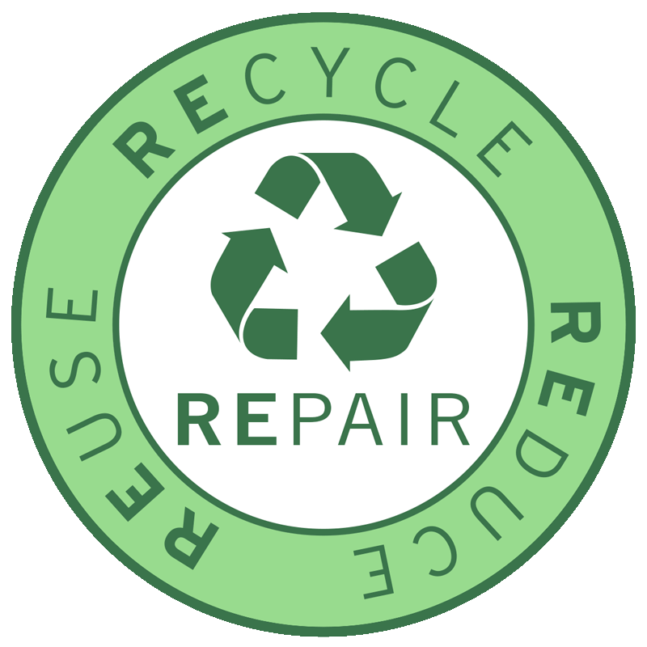

Hvorfor er bærekraft viktig?
Bærekraftig avfallshåndtering handler om å minimere avfall, resirkulere materialer og beskytte miljøet vårt for fremtidige generasjoner. Hvert bidrag teller!
Nøkkelfakta om Avfall
- Norge resirkulerer over 70% av plastflaskene gjennom panteordningen.
- Hvert tonn papir som resirkuleres sparer 17 trær.
- Matavfall utgjør ca. 40% av alt husholdningsavfall i Norge.
- Resirkulering av én aluminiumsboks sparer nok energi til å drive en TV i tre timer.
Hvordan kan du bidra?
Reduser
Kjøp kun det du trenger, og unngå engangsprodukter.
Gjenbruk
Reparer ting i stedet for å kaste dem. Gjenbruk klær og møbler.
Resirkuler
Sortér avfallet ditt riktig, og bidra til en mer effektiv resirkulering.
Bilder